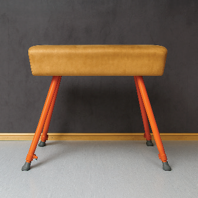
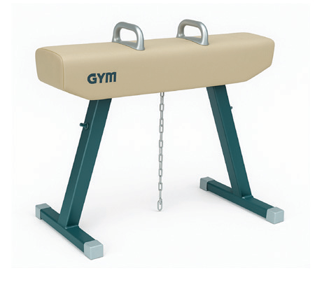
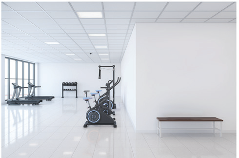

9. Horse vault

A springboard-assisted apparatus used in gymnastics for performing vaulting skills.
10. Pommel horse

A gymnastics apparatus for swinging and balancing feats.
11. Gymnasium

A designed indoor space equipped for physical exercise, sports, and gymnastics activities.
Exercise 4.1
1.Describe the conditions that make the gymnastics apparatus to be considered safe in application.
2.Why should gymnasts perform warm up and cool down before and after the main activities respectively?
3.Why is mental focus important in gymnastics?
Basic skills in gymnastics
The routine of gymnastics activity depends on a mastery of various skills, which contribute to a skillful and confident performance in gymnastics. The basic skills in gymnastics include handstand, splits, bridge, cartwheel and back and forward rolls. The following are explanations of basic skills in gymnastics:
Forward roll
A forward roll is a gymnastics skill where the gymnast rolls forward on the floor by bending their body into a rounded shape, using momentum to move smoothly